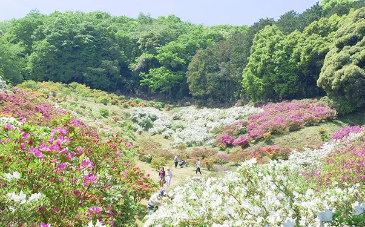
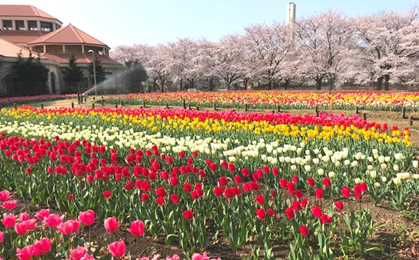
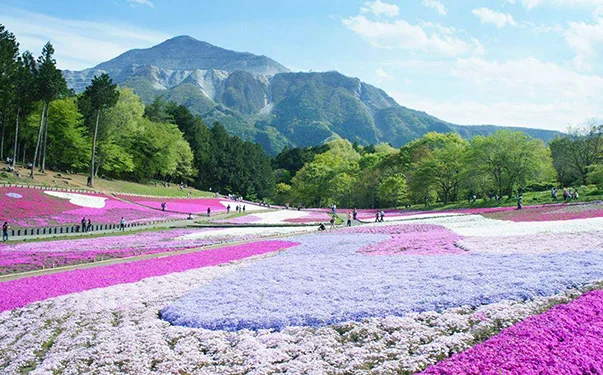
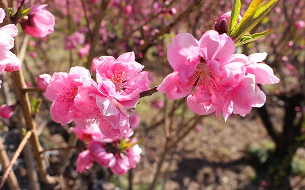
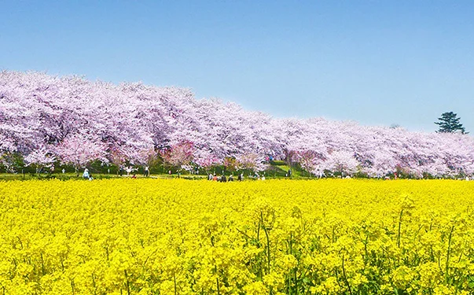
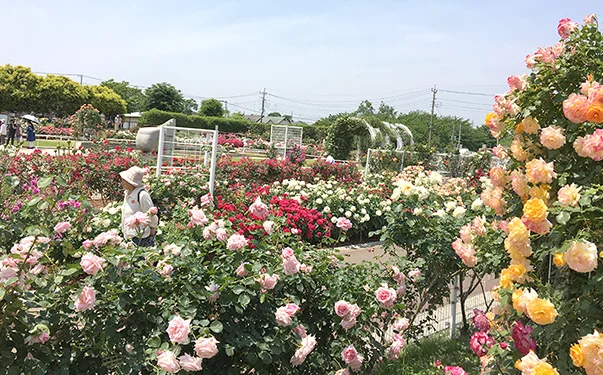
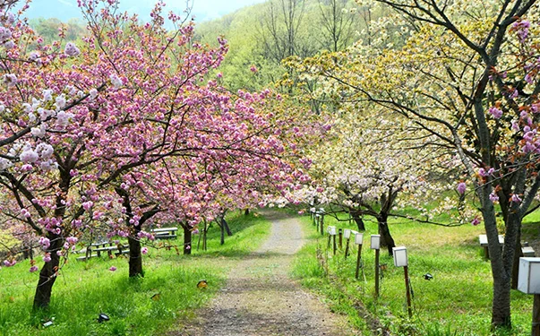
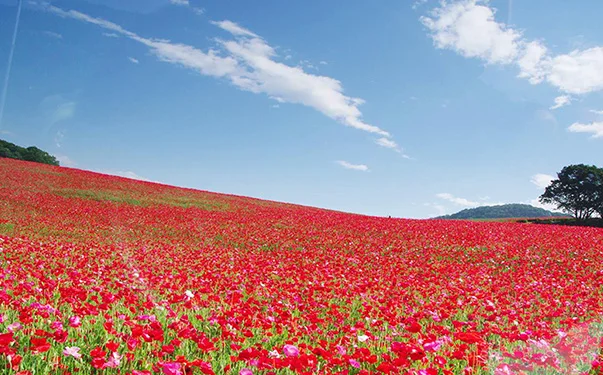
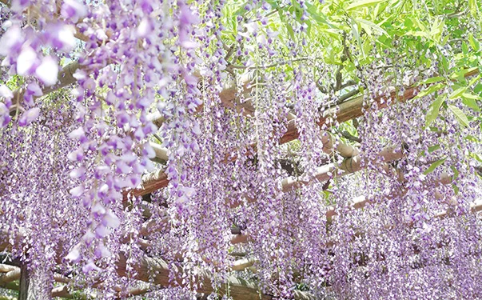

01
KAWAGOE · 6—7月
紫陽花と蔵の街散歩
川越｜蓮馨寺・氷川神社
PEAK · 6/10 — 7/5撮影TIP蔵の黒壁×紫陽花の色を画面半分ずつに。和の構図。
写真家と巡る、写す花旅。
花を"見る"だけでなく、"残す"楽しさまで。
埼玉の花の名所を、写真家の視点で巡る。
— 花の名所を、写真家の目で切り取る旅
埼玉には、四季を彩る花の名所がたくさんあります。 このキャンペーンは、そんな花の名所をただ「見に行く」のではなく、 写真家と同じ視点で「どう撮るか」を楽しみながら巡るもの。
スマートフォンでも、カメラでも。
あなたが切り取った一枚が、誰かの次の花旅になります。
埼玉県内・6つの季節コース

川越｜蓮馨寺・氷川神社
PEAK · 6/10 — 7/5熊谷・行田｜大谷ひまわり畑
PEAK · 7/20 — 8/15
行田｜古代蓮の里
PEAK · 6/25 — 8/5
日高・幸手｜巾着田・権現堂堤
PEAK · 9/20 — 10/10
秩父・長瀞｜月の石もみじ公園
PEAK · 11/10 — 11/30
神川・東松山｜城峯公園・森林公園
PEAK · 11/20 — 1/15投稿写真から、週に一度の更新




投稿するときは、ハッシュタグを添えて
#写す花旅
埼玉県内で撮影した花の写真に、ハッシュタグを添えてInstagramへ。 優秀作品には、撮影地周辺の宿泊券や県産品ギフトをお届けします。
埼玉県本庄市出身のフォトグラファー。透明感と儚さをまとう写真表現で、地元・埼玉や旅先の魅力を発信。